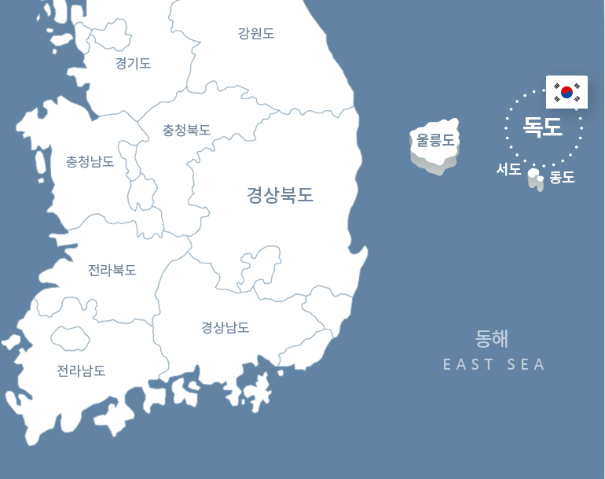

"우리 독도"는 대한민국에서 독도를 소유하고 있는 것을 강조하고자 하는 구호나 표어입니다. 이는 대한민국 정부와 국민들이 독도에 대한 주권을 강력하게 주장하고, 일본의 독도에 대한 영토적 요구를 반박하기 위해 사용됩니다.
"우리 독도"라는 표현은 한국인들의 독도에 대한 애정과 자부심을 나타내는 것뿐만 아니라, 일본의 독도에 대한 주장을 부정하고 한국의 영토로 인식되어야 함을 강조하는데 사용됩니다. 이 구호는 대한민국 국민들 사이에서 독도에 대한 이해와 인식을 높이고, 국가적 단합을 강화하는데 기여하고 있습니다.
구호 외치는 독도아카데미 고교생
기온과 강수량
독도는 한반도 동쪽에 위치하며 울릉도에서 약 87.4km 떨어져 있습니다. 이는 독도가 지리적으로 한국과 밀접한 연관이 있음을 나타냅니다.
"우리독도"라는 표현은 독도가 대한민국의 영토임을 강조하고, 이를 통해 국민적 자부심과 애정을 나타내는 중요한 표현입니다. 이는 독도의 역사적, 지리적, 국제법적 근거를 기반으로 하며, 독도에 대한 지속적인 관심과 보호를 촉구하는 의미를 담고 있습니다.
